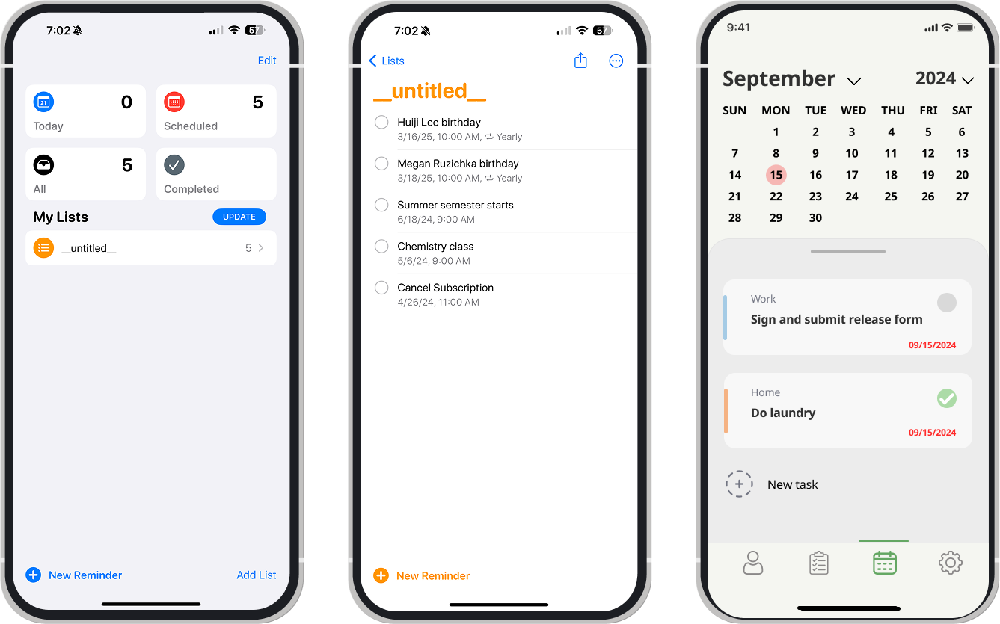

The objective of this project was to redesign a native Apple or Android app and give it a fresh, user-centered perspective. I chose to remake the iOS Reminders and Calendar apps by blending their core functionalities into a single, cohesive experience. I began with research into color psychology and user engagement strategies to identify visual elements like that could make the app feel more inviting and encouraging to use.
To improve usability and planning efficiency, I made the interface calendar-oriented, allowing users to naturally connect tasks with specific dates. This structure not only streamlined task management but also gave the app a more organized intuitive feel.
